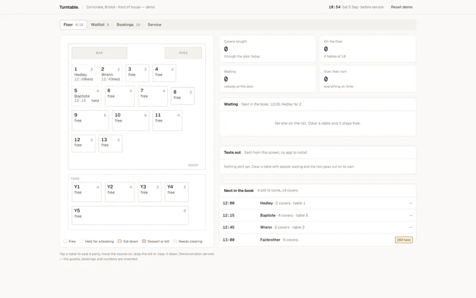

Turntable
The floor, the queue at the door and the deposit rule, on one screen. A drawn plan of eighteen tables across the room and the yard, each one showing who is on it, which course they are on and how long they have been sat. Clear a table and the top party on the waitlist that fits it is texted, walks in and is seated, all on the plan in front of you. The book runs alongside it with the deposit rule that catches sixes and Friday nights, and the numbers behind the service — covers, turn times and no-shows by month.
This is the build itself, not a recording. Use it like a customer would. State is kept in your browser; there is a reset inside.

What does Turntable do?
Turntable is a working tool built for an invented restaurant. Front of house already runs on a paper list and a sense of the room. This puts the two together, so the wait quoted at the door comes from the tables actually sat down rather than from a guess.
It sits in the Specific lane: built around one trade’s actual day: its diary, its paperwork, its reminders.
What is in it
- SVG floor plan of the room and the yard that scales to a phone and reads off the real clock
- Clear a table, the waitlist is texted, the party arrives and sits down — all on the plan
- Waits quoted off the actual floor: which tables fit, and how long they have been sat
- Course, bill and clear-down on every table, with a red timer once it is over its turn
- The deposit rule for sixes and for Friday and Saturday, the guest's confirmation text, and the deposit kept on a no-show
- Covers by hour, turn times against target, no-shows by month; state survives a reload
- Written
- By hand, as a single self-contained page. No page-builder, no theme, no framework.
- Dependencies
- None at runtime. Fonts load from Google Fonts with system fallbacks; everything else — every drawing, chart and interaction — is in the file.
- Imagery
- No stock. Every visual is drawn in code, SVG or canvas.
- The business
- Corncrake — invented. Every person, number and review inside is fictional so nothing here exposes a real client.
- Runs on
- Any modern browser, and it is built for phones as much as desktops. State stays in your browser; there is a reset control inside.
- Yours would
- Carry your name, your numbers and your diary, and be owned by you from day one.